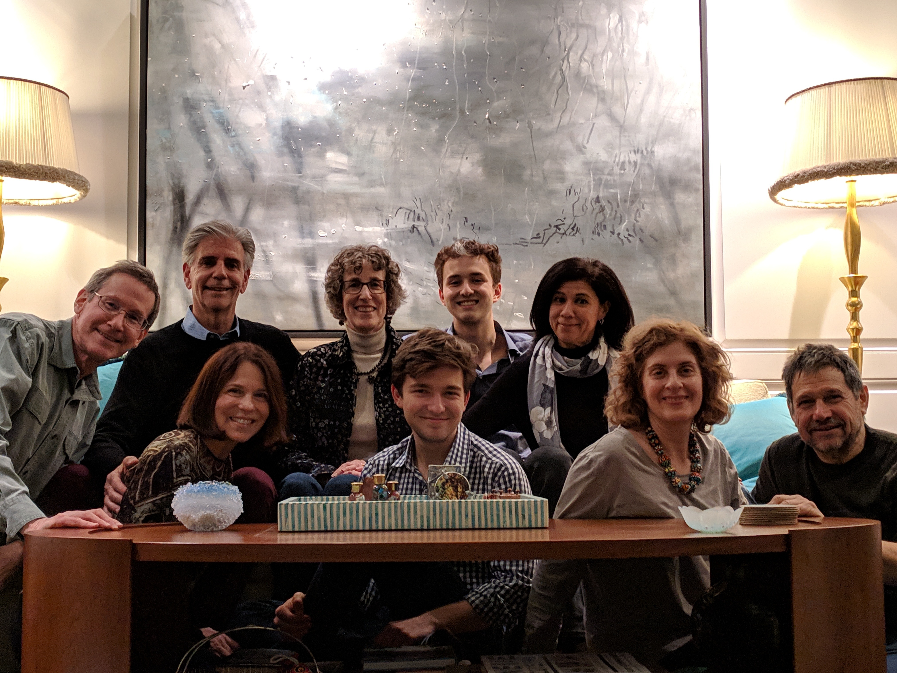

Hi! I'm Michael Newman Fortunato. Welcome to my website. I am currently a third year at the University of Chicago pursuing a B.S. in Mathematics. I am using this platform as a creative space to test new ideas, and to document my life.
My interest is in theoretical mathematics and computer science. I like math because it forces me to think cleanly and to visualize. When approaching math problems I do the following:
My family is mostly made up of engineers and I have always liked to think of myself as a builder of some sort. When I was a kid I often liked to take things apart and put them back together. Building is a great way of life. It is an antitode to black box problem: We use a ton of things and do not understand how they work, which I think discourages us from being curious. Building projects helps us understand how something works, forces us to consider individual components and then use abstraction to understand how those components work together to make something "go". In addition, building encourages a sustained focus, forces one to contend with setbacks, and forces one to do tedious work, which I think is an essential skill to have.
Besides math, I really love language. I have always wanted to be a good writer. The art of conversation, of an essay or memoir, these are things that require true intelligence and a spark to create.
I want to go into artificial intelligence and contribute to the field. Specifically, I hope to get a PhD in Computer Science specializing in the subfield of language embeddings.  Therefore, my interests really fall in the field of natural language Processing machine learning, topic-modelling, concept recognition, context recognition, and vectorized word representations. A few of my favorite papers are Distributed Representations of Words (Tomas Mikolov et. al), Latent Dirichelect Allocation (David Blei et al), kAnchor Words (Sanjeev Arora et al).
{kind=link}